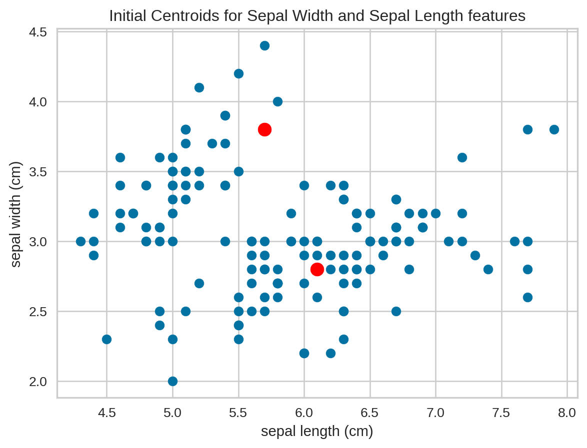

todo: write your own code to implement the k-means algorithm. Make plots of the various steps the algorithm takes so you can “see” the algorithm working. Test your algorithm on either the Iris or PalmerPenguins datasets. Compare your results to the built-in kmeans function in R or Python.
todo: Calculate both the within-cluster-sum-of-squares and silhouette scores (you can use built-in functions to do so) and plot the results for various numbers of clusters (ie, K=2,3,…,7). How many clusters are suggested by these two metrics?
Latent-Class MNL
todo: Use the Yogurt dataset from HW3 to estimate a latent-class MNL model. This model was formally introduced in the paper by Kamakura & Russell (1989), which you may want to read or reference. Compare the results to the standard (aggregate) MNL model from HW3. What are the differences in the parameter estimates?
todo: Fit the latent-class MNL model with 2, 3, …, K classes. How many classes are suggested by the BIC? The Bayesian-Schwarz Information Criterion link is a metric that assess the benefit of a better log likelihood at the expense of additional parameters to estimate – akin to the adjusted R-squared for the linear regression model. Note, however, that a lower BIC indicates a better model fit, accounting for the number of parameters in the model.
Today, we will be conducting Segmentation Analysis using the K-Means method. Segmentation analysis is used heavily in marketing, where it helps select a target market for a given product. Segmentation is crucial in marketing in order to properly identify the customer groups you are targeting.
The first area people think of when they are new to Segmentation is demographics. We should target individuals who have similar demographics since we believe that properly divides them into groups with similar interests. This is not always correct, and its usefullness can vary. Below is a great example.
Lets say we have an individual with the below traits:
Male
Born in 1948
Raised in UK
Married twice
Lives in a castle
Wealthy and famous
One person who may come to mind that fits these traits is Prince Charles.
Prince Charles, Prince of Wales
Now, lets look at someone else who matches these traits. That person is…..
Ozzy Osbourne, Prince of Darkness
To the blind eye presented with just the demographics of these individuals, one would think two very similar people would be chosen with this criteria. However, if we were marketing… a high end black eye liner with these traits…only one of these individuals may potentially be a buyer.
Now that we gave a brief explanation of Segmentation, lets get into the method of k-means.
K-means is an iterative method of assigning each data point to groups. Slowly these data points get clustered based on similar features. The objective of k-means is to minimize the sum of distaces between data points and the cluster center or centroid in order to correctly group each data point to the group it most closely matches.
For our example, we’ll be using the popular Iris dataset, which was made in 1936 and has been used since for many data analytic applications for testing. It contains multiple different flowers, the flower species, and characteristics of that specific flower such as length and width of sepals and petals.
Iris Dataset
Before we start to analyze the iris dataset, we’ll first go through how the k means segmentation method works.
Initialization of Centroids
The first step of k-means is choosing how many clusters or groups we want to have. One may ask, “Shouldn’t we have an idea of how many groups we want to have?”. This is true, and is why k-means is usually used to see if we can identify any further groups which we did not know existed.
Lets take our Iris dataset:
from sklearn.datasets import load_irisimport numpy as npimport pandas as pdiris = load_iris()X = iris.datairis_df = pd.DataFrame(iris.data, columns=iris.feature_names)iris_df.head()
sepal length (cm)
sepal width (cm)
petal length (cm)
petal width (cm)
0
5.1
3.5
1.4
0.2
1
4.9
3.0
1.4
0.2
2
4.7
3.2
1.3
0.2
3
4.6
3.1
1.5
0.2
4
5.0
3.6
1.4
0.2
The features are the column names and the groups we are trying to divide them into are their species (setosa, versicolor, and virginica). These species are not listed but they are known, as that is the purpose of k-means in this context; discovering if k-means function can group them into their proper species.
def initialize_centroids(X, k):""" Randomly initialize k centroids from the dataset X. """ np.random.seed(42)# Randomly choose k data points from the dataset as initial centroids random_indices = np.random.choice(X.shape[0], size=k, replace=False)# Creates array of data points that are the initial centroids centroids = X[random_indices, :]return centroids
First, we decide how many groups (k) we want to divide our dataset into for segmentation. We will choose 3 groups (although we know there are three species, we can still see if k-means groups them properly). The number of groups is represented by k.
We then randomly choose 3 data points or rows in the dataset to be our centroid. We do this by randomly choosing 3 indices, and indexing those indices into the dataset to create our centroid variable. The centroid variable now has 3 rows of data.
Since a plot is only 2D, we’ll give show an example using just sepal length and sepal width of the locations of the randomly assigned centroids. we’ll use k=2 for the exmaple.
# Initialize centroidinit_cent = initialize_centroids(X[:,[0,1]], k=2)[:,[0,1]]init_cent# plot data pointsimport matplotlib.pyplot as pltplt.scatter(X[:, 0], X[:, 1])plt.scatter(init_cent[:, 0], init_cent[:, 1], s=100, c='red')plt.xlabel(iris.feature_names[0])plt.ylabel(iris.feature_names[1])plt.title("Initial Centroids for Sepal Width and Sepal Length features")plt.show()

As you can see by the two red points, these centroids are not really where you would think the center of the dataset is. That will get fixed later on in the calculations.
Computing distance to Centroid
Next, we’ll compute the distance to the centroid from each data point in the dataset. We’ll do this by calculating the Euclidian Distance.
The formula for Euclidian distance is:
The subscripts go to 4 because w ehave 4 variables. It will always be how many features you are analyzing for your k-means.
Now, we’ll translate this formula into a function for python:
def compute_distances(X, centroids):""" Compute the distance from each point in X to each centroid. """# Create a matrix of distances between each data point and each centroid distances = np.zeros((X.shape[0], len(centroids)))for i, centroid inenumerate(centroids): distances[:, i] = np.linalg.norm(X - centroid, axis=1)return distances
The code above is initially creating an array of zeros with the number of data points from our dataset as rows and the number of centroids as our columns. This is because for each row of data, we are calculating the distance to each of the randomly selected centroids.
We then calculate the euclidian distance from each data point to each centroid using the np.linalg.norm function.
Now using our example from before with just sepal length and width, we get the following array. We’ll show the plot with the distances to each centroid for the first data point in our iris dataset.
Now that we have the distances for each data point to each centroid, we will assign the each data points to the cluster based on the respective distance from that data point to the centroid. The centroid which has the lowest distance for each data point will result in the data point being assigned to that cluster.
We’ll use the np.argmin function to find the index or column number which has the shortest distance for each data point.
def assign_clusters(distances):""" Assign each point to the nearest centroid. """return np.argmin(distances, axis=1)
Here is a brief look at our table of distances to each centroid/data point:
As you can see, there is a clear divide between the two clusters, which visually means our code is working thus far. However, the centroids still do not look as if they’re in the center of each cluster.
Updating Centroids
Now we will update the centroid locations to be more representative of the clusters that have been assigned to them. We do this by finding the mean value for each feature for every data point in that cluster.
Below is code used to update the centroids. We take our distances table and our cluster array to create a new array which has the mean values for sepal length and width for each cluster.
def update_centroids(X, labels, k):""" Update the centroids by calculating the mean of the points assigned to each centroid. """ new_centroids = np.zeros((k, X.shape[1]))for i inrange(k): new_centroids[i, :] = X[labels == i].mean(axis=0)return new_centroids
Lets see the new centroid locations for each cluster:
These centroids look much more accurate in respect to the actual centers of each cluster.
Putting it all together to Calculate K-means
Now that we have each individual part of k-means, we need to put it all together so we iterate over our functions until we believe we’ve met the desired end state.
The desired end-state is usually set by either max iterations of our function running, or a tolerance to meet in respect to the previous centroid locations and the updated centroid locations. Once that tolerance is low enough between the updated and old values, we say the function is done running and we’ve found k-means.
Below is our code when we put it all together:
def k_means(X, k, max_iters=100, tol=1e-4):""" The main function to run the k-means algorithm. """# Step 1: Initialize centroids centroids = initialize_centroids(X, k)for _ inrange(max_iters):# Step 2: Compute distances and assign clusters distances = compute_distances(X, centroids) labels = assign_clusters(distances)# Step 3: Update centroids new_centroids = update_centroids(X, labels, k)# Step 4: Check for convergenceif np.all(np.abs(new_centroids - centroids) < tol):break centroids = new_centroidsreturn centroids, labels
Everything should look familar, exepct for the final part which checks for convergence through a tolerance analysis.
Calculating K-means for the Iris Dataset
That we have our whole function for k-means, we’ll use all the variables in the iris dataset rather than just two which was done for data visualization purposes, and we’ll compare our results to the built-in k-means function in the scikit package.
We’ll still only display our results in a 2D format. Here are our results for k-means of the iris dataset.
/opt/conda/lib/python3.11/site-packages/sklearn/cluster/_kmeans.py:1416: FutureWarning:
The default value of `n_init` will change from 10 to 'auto' in 1.4. Set the value of `n_init` explicitly to suppress the warning
As you can see, our plots are nearly identical. But the real test is seeing if our centroids and labels we’re calculated similarily to the scikit k-means function.
compare_centroids = np.allclose(k_means(X, k=3)[0], kmeans.cluster_centers_)print(f"Self-made function centroids are within tolerance to built-in function centroids: {compare_centroids}")
Self-made function centroids are within tolerance to built-in function centroids: True
compare_labels = np.allclose(k_means(X, k=3)[1], kmeans.labels_)print(f"Self-made function cluster labels are within tolerance to built-in function cluster labels: {compare_labels}")
Self-made function cluster labels are within tolerance to built-in function cluster labels: True
A result of True with np.allclose means all centroids and labels calculated from our custom function were within tolerance and assigned correctly based on the built-in function.
At last, we’ve learned how to manually calculate and code a k-means function in order to properly segment our data into potential groups to target, although I don’t think we’ll be advertising to flowers anytime soon…